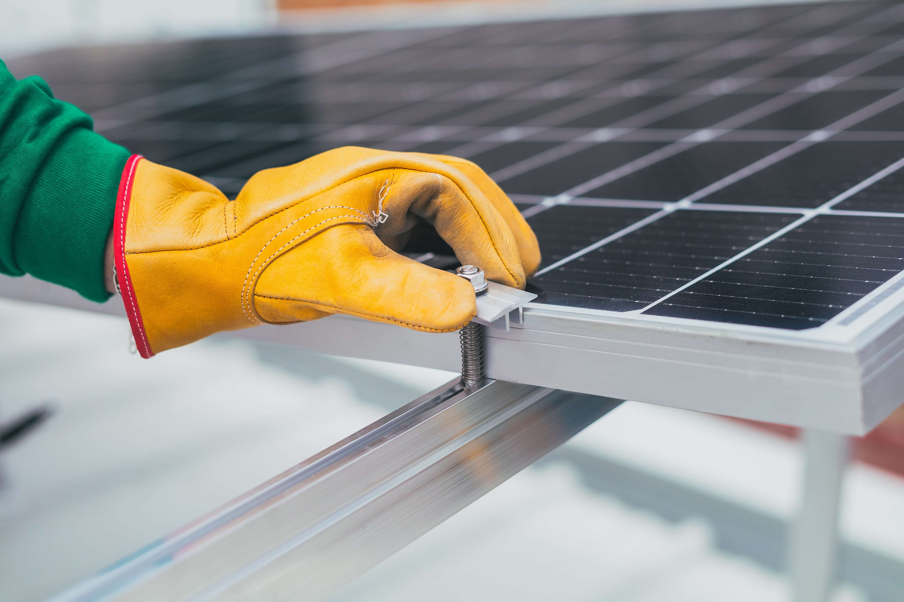

ELCO Tîrgu Jiu s-a înființat în jurul anilor 1960,
ca șantier al Întreprinderii de Rețele Electrice
Craiova, funcționând astfel până în 1992, când a
fost denumită Electroconstrucția ELCO Tîrgu Jiu,
devenind Societate Comercială.
Obiectul de activitate cuprinde proiectarea și
execuția instalațiilor electrice 0.4kV - 110kV. De-a
lungul timpului, colaborând cu cei mai buni
furnizori de aparataj electric și beneficiind de o
capacitate tehnică de ultimă generație, precum și de
o valoroasă echipă de specialiști, ELCO Tîrgu Jiu a
reușit execuția unor lucrări de mare complexitate.

Compania dispune de dotare materială
corespunzătoare, de utilaje și tehnică avansată și
de un colectiv cu experiență în domeniu, care prin
competențe și seriozitate a generat un prestigiu
deosebit în domeniu.
Preocupările pentru
managementul calității, al mediului, al securității
și al sănătății în muncă reflectă preocuparea
noastră constantă pentru creșterea calității
serviciilor prestate.